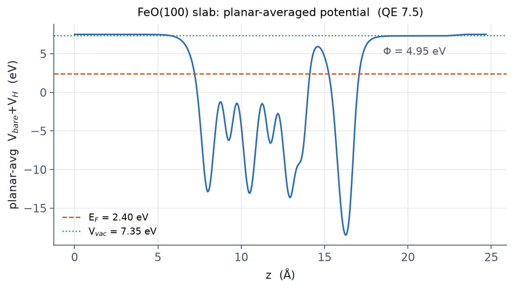

표면은 주기 경계조건 안에서 슬랩(slab) — 몇 개의 원자층 + 진공층 — 으로 모델링합니다. 흡착 에너지, 표면 에너지, 일함수가 모두 여기서 나옵니다.
슬랩 만들기 — 손으로 쓰지 마세요
슬랩 좌표를 손으로 쓰는 것은 오류의 온상입니다. ASE나 pymatgen 같은 생성기를 쓰세요.
from ase.build import surface, bulk
from ase.io import write
feo = bulk('FeO', 'rocksalt', a=4.33)
slab = surface(feo, (1, 0, 0), layers=4, vacuum=8.0) # 진공 8 Å (양쪽 합 16 Å)
slab.center(axis=2)
write('feo100.scf.in', slab, format='espresso-in',
pseudopotentials={'Fe': 'Fe.pbe-spn-kjpaw_psl.1.0.0.UPF',
'O': 'O.pbe-n-kjpaw_psl.1.0.0.UPF'},
kpts=(6, 6, 1), # 진공 방향 k는 1
input_data={'system': {'ecutwfc': 70, 'ecutrho': 700,
'occupations': 'smearing', 'degauss': 0.01}})
생성된 파일을 열어 CELL_PARAMETERS와 ATOMIC_POSITIONS가 어떻게
쓰였는지 직접 읽어 보세요. 자동 생성기의 출력을 읽을 수 있는 것이
03장을 배운 이유입니다.
자기 배열에 관한 주의 — 1×1 (100) 셀은 FeO의 AFM-II 배열(교대하는 (111)
스핀 면)을 기하적으로 담을 수 없습니다. 그래서 이 시연은 비자성으로
단순화했습니다. 실제 자성 표면 연구라면 자기 배열을 담을 수 있는 더 큰
셀과 starting_magnetization 시드가 필요합니다.
슬랩 계산의 관례들:
- 진공 방향 k-점은 1 (분산이 없으므로).
- 하단 1~2층은 벌크 위치에 고정(
if_pos 0 0 0)하고 위쪽만 풉니다. - 셀 최적화는
cell_dofree='2Dxy'로 진공 방향을 고정합니다. - 진공 두께와 층 수는 그 자체가 수렴 파라미터입니다.
쌍극자 보정
비대칭 슬랩(한쪽 면만 흡착·재배열)은 셀 양단에 퍼텐셜 차이가 생기고, 주기 경계 때문에 인공 전기장이 걸립니다. 톱니 퍼텐셜로 상쇄하는 것이 쌍극자 보정입니다.
&CONTROL
...
tefield = .true. ! 스위치 두 개는 &CONTROL 소속
dipfield = .true.
/
&SYSTEM
...
edir = 3 ! z 방향
emaxpos = 0.90 ! 진공 한가운데 (분수 좌표)
eopreg = 0.05
eamp = 0.0 ! 외부 전기장 없이 보정만
/
변수 소속에 주의하세요 — tefield/dipfield는 &CONTROL,
edir/emaxpos/eopreg/eamp는 &SYSTEM입니다. tefield를 &SYSTEM에
넣으면 read_namelists ... bad line 에러로 즉시 멈춥니다 (실측으로 확인한,
튜토리얼들이 자주 틀리는 지점입니다). emaxpos(톱니의 꼭짓점)는 반드시
진공 안에 놓아야 합니다. 슬랩을 가로지르면 비물리적 결과가 나옵니다.
일함수
$$\Phi = V_{\mathrm{vacuum}} - E_F$$
절차: SCF → pp.x(plot_num=11, bare + Hartree 퍼텐셜) →
표면 평행 평면 평균(average.x 또는 직접 파싱) → 진공 평탄 구간의 값에서
Fermi 준위를 뺍니다.

슬랩 에너지가 진공 두께에 민감하게 흔들린다면 쌍극자 상호작용이
남아 있다는 신호입니다 — dipfield를 켜고 진공을 늘리세요.
또, 평면평균 퍼텐셜이 진공에서 평탄해지지 않으면(기울기가 남으면)
보정 위치(emaxpos)가 잘못됐거나 진공이 부족한 것입니다.
일함수는 진공이 평탄해진 것을 눈으로 확인한 뒤 읽어야
합니다.
관련 예제
- E13 · 슬랩과 AIMD — 생성 → relax → 일함수 실측 전체.
- E9/E10 — 슬랩으로 가기 전의 벌크 기준.